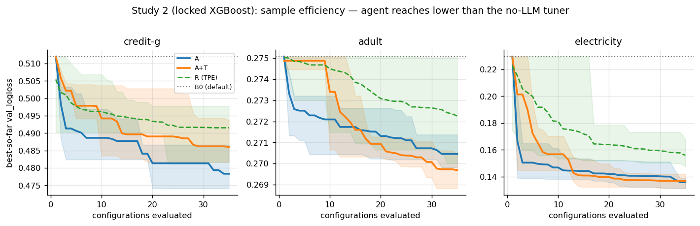
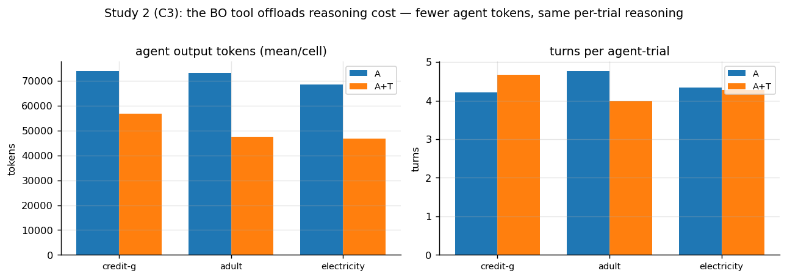

AutoML as Instrument, Not Driver
I'm running a research program on what happens when you hand an LLM research agent the tools of classical AutoML. The agent is the autoresearch pattern: an LLM edits a training script, runs a trial, checks whether validation loss improved, keeps or discards the change, and repeats — a hill-climb over a git branch, with the harness, data splits, and scoring locked away from it. The workload is supervised tabular classification across five datasets, four model families, and a pre-registered grid of conditions. The question I started with was simple: does giving the agent a callable Bayesian-optimization tool make it a better researcher than the same agent without one?
The first study compared the agent alone, the agent with a sealed BO tool it can invoke, and two scripted no-LLM searches (TPE and random) at matched trial budgets. Two surprises came out of it, and together they redirected the whole program.
The first surprise: you cannot contain this agent in a search box. On the electricity dataset, the agent's winning configurations sat entirely outside the parameter space the BO tool was allowed to search — twenty-thousand-tree ensembles with loss-guided growth and unusually wide histogram binning. The comparison was biased against the tool by construction, so I widened the space, added early stopping, and warm-started the episodes. The agent promptly stepped over the new boundary too, this time with in-trial Optuna searches, seed ensembles, and two-pass training. The lesson isn't that the box needs to be bigger. The agent's action space is all of Python; any fixed space a tool declares is strictly smaller than what the agent will actually do.
The second surprise: the agent doesn't need help choosing the model. Gradient-boosted trees dominate most tabular benchmarks, the agent knows it, and where they don't dominate, it noticed — on a high-dimensional text-derived task it went to a neural net unprompted and beat the tree baseline by a wide margin (logloss 0.10 against 0.28). The model-selection layer of AutoML, the part the field spent a decade automating, is redundant for an agent that has absorbed the entire empirical literature as a prior. This lines up with what the canonical AutoML survey already conceded: the search algorithm barely matters, random search is competitive, and the actual frontier is the data pipeline — where practitioners spend 60 to 80 percent of their effort and AutoML research spends almost none of its attention. The agent's real wins in my grid were exactly there: probability calibration, quantile transforms, two-pass training schemes.
So the live question changed. Not "can the tool beat the agent" — that's a treadmill, the agent always escapes the box — but: with the model family locked, does a tool make the agent's remaining work more efficient or more reliable? The second study fixes XGBoost everywhere and runs four conditions on three datasets: a default-config floor, a pure TPE tuner with no AI, the agent alone, and the agent plus the BO tool. I decided the metric up front, because with the family fixed, everyone competent lands near the same final score and "did the tool improve accuracy" was always going to read as a null. The honest axes are sample efficiency, run-to-run consistency, and what the search costs in agent reasoning.

Findings so far, at three seeds per cell and descriptive rather than inferential. The agent beats the pure tuner on final score on all three datasets, and the sharper version of that result is that the tuner never gets there at all: across twenty seeds per task, the no-AI tuner never lands within ten percent of the pooled best solution. It can't — it's confined to fixed preprocessing, and the winning region is reachable only through pipeline work. Second, the agent alone is the most sample-efficient searcher; the with-tool arm's early BO exploration slightly worsens its area-under-the-budget-curve on every task. The tool does not improve the search. Third, and this is the interesting one: the tool's actual value is cost. The with-tool agent spends roughly a quarter to a third fewer output tokens and about half the dollars, not because it reasons more efficiently — reasoning per hand-run trial is nearly identical — but because BO episodes consume trial budget without consuming any LLM at all. Mechanical offload, not augmentation. Final scores are equivalent everywhere, so the offload comes at no cost in quality.

Which is the thesis in one line: the boundary moves, the roles recompose. The agent does the parts AutoML was never good at — knowing the right model on sight, engineering the pipeline — and the optimizer gets demoted from autonomous driver to a subroutine the agent calls when systematic search is cheaper than thinking. The canonical survey asked for human-guided, non-black-box ML as an open problem; an LLM agent that reaches for tools appears to be what that looks like in practice.
A methodological confession that cost me a metric: I intended to measure efficiency in compute-seconds, then realized my wall-clock numbers were contaminated — some runs shared the machine with unrelated background work. Configurations-evaluated and reasoning tokens are the clean, machine-independent axes, so those are the headline measures; the harness now logs CPU time properly for future runs. And the standing caveats: three seeds is three seeds (the protocol targets five on headline cells), and everything above is subject to revision as the remaining runs land.
Next is finishing those seeds, then the forward-looking half of the question: handing the agent one tool aimed at the pipeline frontier itself — automated preprocessing or calibration search — and asking the same with-versus-without question there. One tool per condition, or nothing is interpretable. This program shares a lineage with my earlier failure-modes case study, which came out of the same instinct: run the loop for real, at length, and report what actually happens rather than what the diagram promises.